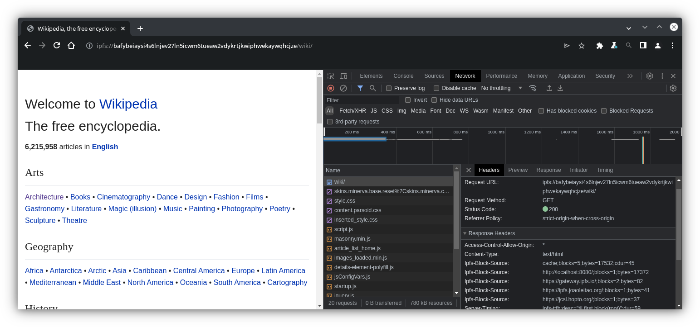

Content-Verifying IPFS Client in Chromium
|
|
| ||
|
|
|
|
|

What is IPFS?
- Content-addressed: pulling from a DHT & verifying
- Distributed: agnostic to which gateway/node provided
Some of the IPFS Ecosystem
- Brave
- IPFS Companion extension
- curl
- js-ipfs-core
- kubo
- lassie
- bifrost
URL Schemes
- ipfs://bafybeidjtwun7gvpfjymhquloxzzwhpctgsw3vxampxr46du2we4yhiqje/reference/en/index.html
- Refers to immutable content/site
- Origin contains hash for root of Merkle tree
- ipns://k51qzi5uqu5dijv526o4z2z10ejylnel0bfvrtw53itcmsecffo8yf0zb4g9gi/links.html
- Mutable pointer to immutable data
- Origin contains public key to verify the 'pointer' record
- ipns://en.wikipedia-on-ipfs.org/wiki/Book
- DNSLink uses DNS TXT records to redirect to /ipns/ or /ipfs/
- Origin contains hostname
Let's step through loading a page
<script type="module"> import mermaid from 'https://cdn.jsdelivr.net/npm/mermaid@10/dist/mermaid.esm.min.mjs'; mermaid.initialize({ startOnLoad: true }); </script>
User enters URL
ipns://k51qzi5uqu5dku8zqce3b7kmpcw6uua9w00b5boyaevowmzls2rpie0itokett/
Request IPNS Record
http://localhost:8080/ipns/k51qzi5uqu5dku8zqce3b7kmpcw6uua9w00b5boyaevowmzls2rpie0itokett?format=ipns-record Returns: Content-Type: application/vnd.ipfs.ipns-record Body (protobuf) contains:
Verify signature and continue.
DNS TXT Record Lookup
_dnslink.ipfs.tech has TXT "dnslink=/ipfs/QmRE3dyFsbhC1dAthPBvgo4w15dGwppCAybgmJDB5m2SRy"
We have our immutable content
Request the root node in a verifiable format (see https://specs.ipfs.tech/http-gateways/trustless-gateway/)
https://ipfs.io/ipfs/QmRE3dyFsbhC1dAthPBvgo4w15dGwppCAybgmJDB5m2SRy?format=raw Returns Content-Type: application/vnd.ipld.raw directory with 26 entries. Verify the hash matches and continue.
The directory that contains index.html, so request that
https://gateway.pinata.cloud/ipfs/QmTzVjzGMG4LwBY9ArxcNcokPfbpG2biT8Gy9AiecxKtju?format=raw Or set header Accept: application/vnd.ipld.raw instead of format parameter. Note the recursive verification.
index.html fits into a single block
So just deserialize and return its content. The HTML starts rendering, and requests a resource. <img style="" class="max-w-40 mx-auto" src="/_nuxt/ipfs-logo.a313bcee.svg" data-v-6d12c5c1> This is relative to the ipns root, so start over with a request for: ipns://k51qzi5uqu5dku8zqce3b7kmpcw6uua9w00b5boyaevowmzls2rpie0itokett/_nuxt/ipfs-logo.a313bcee.svg
Lots of stuff is in hot in cache. Requesting the entry _nuxt:
https://ipfs.joaoleitao.org/QmYpxEzdbNbohung4gQoZFoQEzLNeBT8oGCQGPtKgjDbnT?format=raw
_nuxt is also a directory, with 164 entries
Request the file we're after. https://ipfs.fleek.co/ipfs/QmWTW21hadJGoAcmGZC18mCFq71UUVGPtJSX5PeBubnQCQ?format=raw
If this file were big
Request the file parts in parallel https://gateway.ipfs.io/ipfs/Qm...1 https://jcsl.hopto.org/ipfs/Qm...2
Since the HTTP responses can come from any source...
Make the same request to multiple gateways in parallel. One will return first, if it passes verification, others are cancelled. Reduces worst-case times.
e.g.:
- https://ipfs.io/ipfs/QmRE3dyFsbhC1dAthPBvgo4w15dGwppCAybgmJDB5m2SRy?format=raw
- https://dweb.link/ipfs/QmRE3dyFsbhC1dAthPBvgo4w15dGwppCAybgmJDB5m2SRy?format=raw
- https://jorropo.net/ipfs/QmRE3dyFsbhC1dAthPBvgo4w15dGwppCAybgmJDB5m2SRy?format=raw
Possible future considerations
- Design & implementation changes necessary for upstreaming
- User configuration (e.g. gateways to use & discovery enabled)
- IPFS HTTP /routing/v1 API
- Helping with missing data and exhausted known gateways
- Partial CAR (Content-addressed Archives) requests
- fewer network round-trips
- see https://specs.ipfs.tech/ipips/ipip-0402/
- IPFS-specific DevTools (e.g.: DAG explorer)
- Possibly connecting to webtransport IPFS peers
POC Screenshot

Questions & Contact/Further reading
| what | where |
|---|---|
| John's Email | john@littlebearlabs.io |
| ChromeStatus Feature | https://chromestatus.com/feature/5105580464668672 |
| Tracking Issue | https://bugs.chromium.org/p/chromium/issues/detail?id=1440503 |
| POC Repo | https://github.com/little-bear-labs/ipfs-chromium |
| IPFS Specs | https://specs.ipfs.tech |